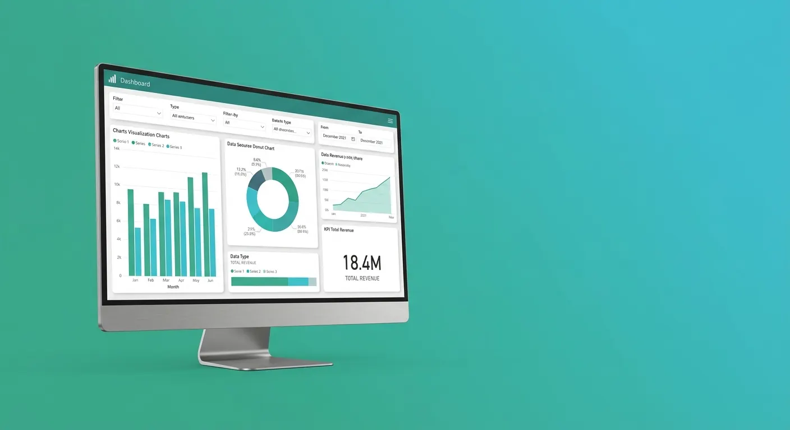

Armamos el reporte de ventas a mano cada mes y siempre hay un error
Automatizamos la actualización de tus indicadores, para que dejes de copiar y pegar datos y de arrastrar errores humanos.

Integraciones y Dashboards de Datos
Conectamos tus sistemas y fuentes de datos —hojas de cálculo, bases de datos, otras herramientas— y los transformamos en dashboards e indicadores claros para decidir, con Power BI como herramienta principal. Disponible para empresas y entidades en Cartagena y el resto de Colombia.
Desafíos comunes
Son problemas que se repiten en distintos tipos de organizaciones, sin importar su tamaño.
Automatizamos la actualización de tus indicadores, para que dejes de copiar y pegar datos y de arrastrar errores humanos.
Conectamos tus fuentes —hojas de cálculo, bases de datos, otras herramientas— en un solo tablero confiable.
Diseñamos indicadores que se actualizan solos, para que veas el estado del negocio en tiempo real, no en el cierre de mes.
Construimos dashboards ejecutivos pensados para que gerencia entienda el estado del negocio de un vistazo.
Qué hacemos
Integramos la información que ya tienes: hojas de cálculo, bases de datos, sistemas internos y otras herramientas.
Ordenamos y relacionamos la información para que los indicadores sean confiables, no solo visualmente atractivos.
Tableros visuales pensados para que gerencia y liderazgo entiendan el estado del negocio de un vistazo.
KPIs definidos según lo que realmente importa en tu operación: ventas, finanzas, atención o seguimiento de proyectos.
Los datos se refrescan solos, sin que alguien tenga que armar el reporte manualmente cada vez.
¿Ya tienes claro qué necesitas para tu dashboard?
Preguntas frecuentes
Depende del alcance: cuántas fuentes de datos se van a conectar, qué tan compleja es la información y cuántos indicadores necesita el negocio. Por eso el primer paso siempre es entender el proyecto antes de dar un estimado, en una primera conversación sin compromiso.
Sí. Power BI permite conectar hojas de cálculo, bases de datos y otros sistemas en un mismo tablero, siempre que la información esté disponible y accesible para su consulta.
Sí, esa es una de sus ventajas principales. Configuramos la actualización automática de los datos conectados, para que el tablero refleje información al día sin que alguien tenga que generarlo manualmente cada vez.
Reduce el tiempo que se invierte armando reportes manualmente, disminuye el margen de error de copiar y pegar datos, y permite ver el estado del negocio en tiempo real en vez de esperar un informe mensual.
Excel es una herramienta poderosa para análisis puntuales, pero se vuelve difícil de mantener cuando los datos crecen o vienen de varias fuentes. Power BI centraliza esa información, la actualiza automáticamente y la presenta en tableros interactivos, sin depender de archivos sueltos que alguien tiene que actualizar a mano.
¿Hablamos?
Cuéntanos qué decisiones necesitas tomar más rápido. Agendamos una primera conversación sin compromiso, estés en Cartagena o en cualquier otra parte de Colombia.